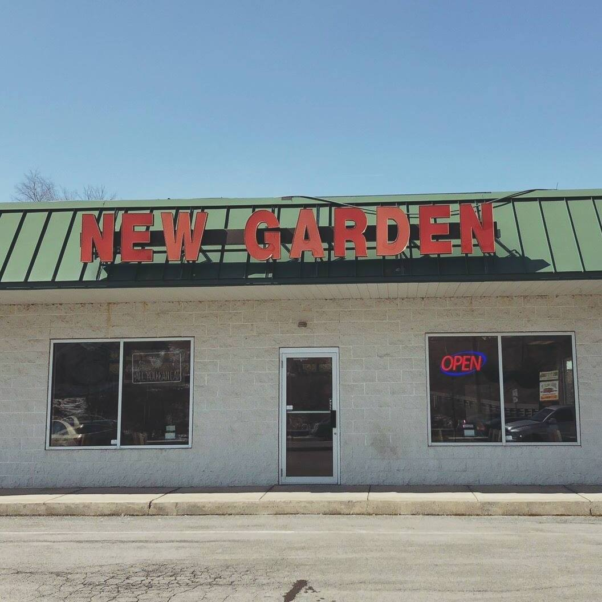
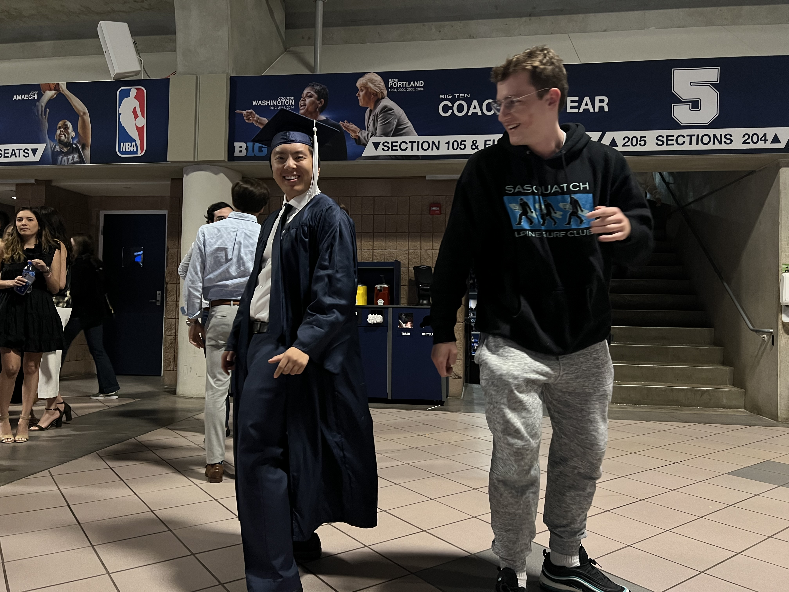
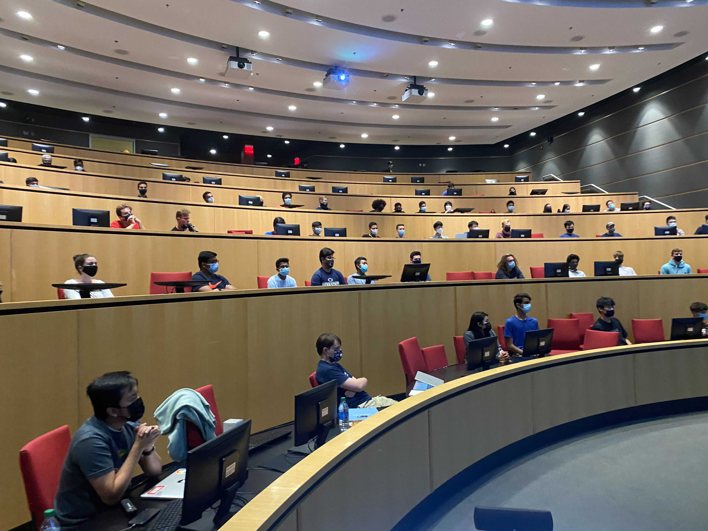

Experience
I've gained experience within established corporations and led multiple teams on various academic projects. These opportunities have given me a well-rounded perspective on addressing complex problems using data-driven techniques.
-
Work Experience
-
An Kang Social Day Care | Computer Technician
Resolving software and application issues for over 400 people. Overhauled the bookkeeping system to formulaic spreadsheets, saving 7.5 hours biweekly.
-
Siemens Digital Industries Software | Software Engineer Intern
An ML / AI focused role. Utilized TensorFlow to classify sentences, ran tests for OpenAI API (ChatGPT), and researched the What-If-Tool for Explainable AI.
-
New Garden Chinese Restaurant | Assistant (to the) Manager
Managed a staff team of 4 in food production and service for over 75 customers per day. Responsible for the front of the house.

-
Education
-
The Pennsylvania State University
- Bachelor of Science in Computer Science
- 2019 Hackathon JPMorgan Sponsored Challenge Winner (900+ participants)
- Leonhard Center Speaking Contest semi-finalist (Top 3%)
 -
Google Developer Student Club | Technical Lead
Led a team of 5 in organizing biweekly workshops about GCP products. Also provided year-long mentorship to members participating in the Google Solutions Challenge.
 -
Penn State Competitive Sports | Intramural Supervisor
Led a team of 30 staff members to run a variety of intramural games. Also contributed to the launch of the LinkedIn Learning Program, which accumulated over 44,000 hours of total watch time.